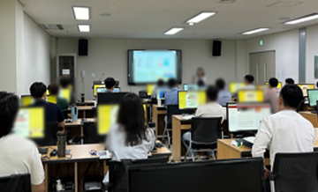
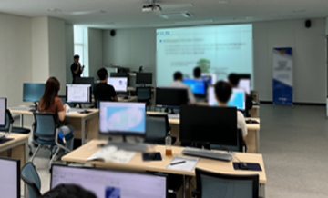
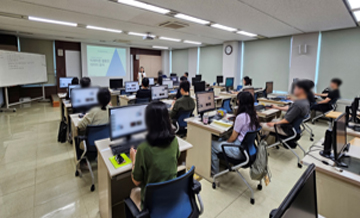
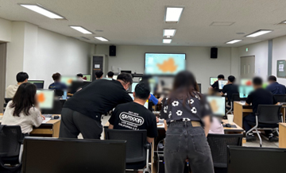

01 / 경찰청 · 2023 — 2025
경찰청 빅데이터 교육 / AI·데이터 역량 강화교육
2023–2025년 연차별 개별 제안·수주
경찰청 맞춤형 빅데이터·AI·데이터 교육
데이터 분석 중심 교육에서 생성형 AI·RAG·AI Agent 주제로 고도화
사업 기본정보
연차별 수행 이력
- Python·QGIS·노코드 분석·머신러닝·텍스트마이닝 중심 교육 운영
- 온라인 교육·시도청 분석교육·오프라인 교육과정 병행 운영
- 경찰청 데이터 기반 업무역량 강화 교육체계 기반 구축
- 시도청 분석교육 7개소 운영
- 인력풀 맞춤교육 추가 운영
- ChatGPT 활용 데이터 분석 주제 반영
- 전년도 교육경험 기반 대상·운영방식 확대
- 총 217시간·182명 대상 교육 운영
- 시도청 분석교육 7회 및 인재개발원 기본·심화 과정 운영
- 인력풀 보수교육 운영
- LLM·RAG·Fine-tuning·AI Agent·Vector DB 등 최신 AI 주제 반영
핵심 성과
3개년 연차별 개별 수주 · 2억 9천 5백만원
2023년 1억원 · 2024년 1억원 · 2025년 9천 5백만원
빅데이터 교육에서 AI·데이터 교육으로 고도화
Python·QGIS·머신러닝 중심 교육 → 생성형 AI·RAG·AI Agent 주제 확장
경찰청 대상별 교육체계 운영
시도청 분석교육 · 인재개발원 기본·심화 과정 · 인력풀 맞춤·보수교육
2025년 217시간 · 182명 교육 운영
공공기관 실무자 대상 AI·데이터 역량강화 교육 운영성과 확보
주요 과업
교육과정 기획·구성
경찰청 업무환경 및 교육대상별 요구를 반영한 빅데이터·AI·데이터 교육과정 구성
대상별 교육 운영
시도청 분석교육, 인재개발원 과정, 인력풀 교육 등 대상별 운영방식 분리 적용
실습환경 점검
Python·QGIS·노코드 분석·생성형 AI 실습을 위한 교육환경 및 도구 사전 점검
강사·교육생 관리
과정별 강사 일정 조율, 교육생 안내, 출결·수료 기준 관리
성과관리
만족도·역량평가·수료현황·교육결과 취합 및 과정별 결과보고 반영
홍보·보고자료 관리
교육 안내자료, 홍보 포스터, 카드뉴스, 결과보고 등 공공기관 제출자료 관리
산출물 · 행정 문서
수행 포지션 · 적용 역량
수행 코멘트연차별 교육 경험을 다음 해 과정 설계에 반영하면서, 공공기관 AI·데이터 교육은 기술 주제보다 기관 업무맥락과 교육대상 구분이 먼저 정리되어야 한다는 점을 확인한 사업입니다.
수행 범위
적용 역량
수행 현장



